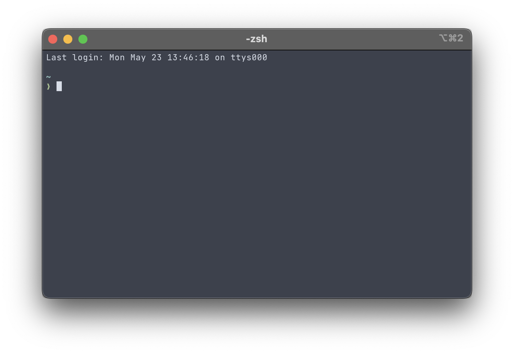
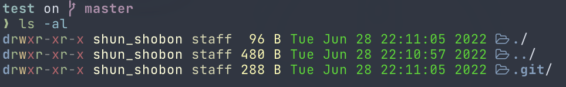
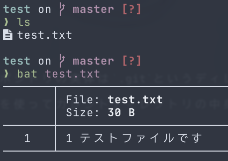
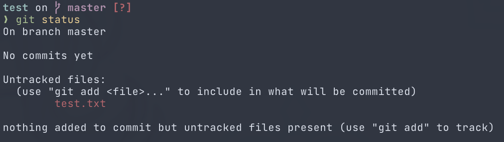
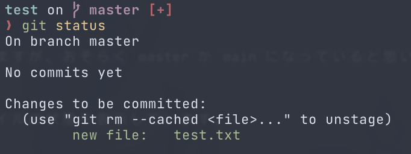
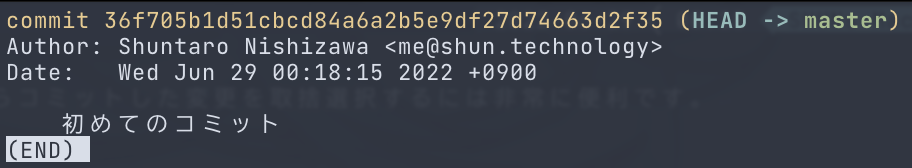

初めてのコミット
早速Gitでコミットをしてみましょう。
リポジトリを作る
とりあえず作業用に適当なリポジトリを作ってみます。 Windowsを使用している場合はGit Bashを、それ以外を使用している場合は普段使用しているターミナル1を開きましょう。 表示されるのは俗に言う「黒い画面」です。もしかしたらこの黒い画面に恐怖心がある方もいるかも知れませんが、頑張ってください。

上記のスクリーンショットは若干違う表示の場合もあると思いますが、基本的に>や$みたいな表示があり、
そこにテキスト(コマンド)を入力することができるようになっているはずです。
コマンドを入力する準備ができたら、リポジトリとして作業するためのディレクトリを作ります。
名前は何でも良いですが、ここではtestとします。
mkdir test
ディレクトリを作ったらカレントディレクトリをそこに移動します。
cd test
移動したらリポジトリを作ってみましょう。
Gitのコマンドは全てgit <サブコマンド名>というような形式で、
リポジトリを作る場合はgit initというコマンドを使用します。
initは Initialize の略で、初期化といった意味があります。
ITの世界では頻繁に使用される略語のため、覚えておくと良いです。
git init
リポジトリの作成に成功すると、
Initialized empty Git repository in <カレントディレクトリ>/.git/
というメッセージが出力されるはずです。
前回のリポジトリの説明で書いたとおり、リポジトリの実体は.gitというディレクトリです。
git initはこの.gitディレクトリを作成するコマンドです。
そのため、ディレクトリにあるファイル・ディレクトリを表示させるlsコマンドを使ってカレントディレクトリの中身を表示すると、.gitが新たに作成されています。

新しくファイルを作ってみる
リポジトリが作成できたら、そこに何かファイルを作ってみましょう。
エクスプローラーやFinderなどのファイルマネージャーから「新規作成」で作ってもいいですし、
VSCodeなどのテキストエディタで作ってもいいですし、
touchコマンドとリダイレクトを駆使して作っても構いません。とにかく何かしらファイルを作ります。
ただしできる限りテキストファイルにしてください。Wordファイルや画像ファイルはGitで管理するにはあまり都合がよくありません。2

これで作業ディレクトリにファイルが新しく追加されました。
Gitは作業ディレクトリ上での変更をきちんと認識しています。
現在のリポジトリの状態を見るにはgit statusというコマンドを使用します。

一段落目は今どのブランチ(branch)に居るかの説明です。ブランチの解説は後でしますが、おそらくmasterかmainになっていると思います。
二段落目はこのリポジトリにはまだコミットがされていないことを表しています。
三段落目が重要です。ここでは作業ディレクトリやステージングエリアにあるファイルの状態を表示しています。
今はUntrackedなファイルとしてtest.txtが表示されています。
UntrackedなファイルはまだGitで管理されていないファイルのことです。
test.txtは作成したばかりで、コミット等も一度も行っていないためUntrackedなファイルとなっています。
四段落目ではコミットすべきファイルはないが(ステージングエリアにまだファイルを追加していないため)、Untrackedなファイルが存在していることを表しています。
ステージングエリアにファイルを追加する
リポジトリへコミットするには始めにステージングエリアに変更を追加する必要があります。 ステージングエリアはコミットをするための準備をする場所です。 始めは面倒だと感じるかもしれませんが、作業ディレクトリで加えた複数の変更からコミットした変更を取捨選択するには非常に便利です。
ステージングエリアへの追加はgit addというコマンドを使用します。
追加という意味でコマンド名がaddなのでとても分かりやすいですね。
先程作成したtest.txtを追加するには以下のコマンドを実行します。
git add test.txt
追加したいファイルが複数ある場合はgit addを複数回実行するか、git addの後にスペース区切りでファイルを複数指定します。
正しくステージングエリアに変更が追加されたかどうかを見るには例のごとくgit statusを使用します。

先程赤色でUntrackedと表示されていたtest.txtが新しいファイルとして緑色で表示されています。
緑色の表示はステージングエリアにある変更を表しています。
ここで重要なのが、git addは コマンド実行時の変更をステージングエリアに追加している ということです。
ステージングエリアへ追加した後に作業ディレクトリに再び変更を加えてもステージングエリアにその変更が伝わることはありません。
再びステージングエリアへ追加する場合はgit addをもう一度実行してください。
コミットする
いよいよコミットをしてみましょう。
コミットをするには名前の通りgit commitというコマンドを使用します。
コミットするときには コミットメッセージ というものを必ず含める必要があります。3
コミットメッセージにはそのコミットでは何をしたかを端的に記すと良いです。
以下のコマンドでコミットメッセージを指定してコミットすることが出来ます。
git commit -m '<コミットメッセージ>'
お疲れさまです、初めてのコミットが出来ました！！
きちんとコミットが出来たかを見るにはgit logコマンドを使用します。
このコマンドはこれまでのコミット履歴を見ることが出来ます。
履歴にはコミットメッセージ、コミットした日時、コミットした人、コミットハッシュがデフォルトで表示されます。
コミットハッシュはそのコミットを指し示すIDのようなもので、コミットごとに異なり、基本的にリポジトリ内で重複することはありません。

開発の流れ
ここでGitを使った開発の流れをおさらいしてみましょう。
git initでリポジトリを作る- リポジトリ上でプログラミングする(ファイルを作る)
- きりの良いところで
git addで変更をステージングエリアに追加する git commitでコミットする- 2に戻る
WSL2ならWindows Terminalなど、macOSならターミナルやiTerm2など、Linuxならそれぞれの端末のことです。
管理できないわけではありませんが、差分表示などの機能を利用できなくなります。
実は必須ではないのですが、基本的にはコミットメッセージがないとエラーになります。